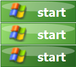

О программе Windows XP Look
Windows XP Look — это бесплатная утилита, которая возвращает на ваш компьютер легендарное оформление операционной системы Windows XP. Программа сделана для тех, кто скучает по классическому виду или хочет удивить друзей ретро-дизайном на современном Windows.
Из чего состоит программа
| 🟦 Панель задач | RetroBar — синяя панель задач с кнопкой «Пуск» как в XP |
| 🪟 Меню «Пуск» | Open-Shell — классическое двухколоночное меню, стили и кнопка XP |
| 🖼️ Обои | Bliss — знаменитые обои Windows XP (зелёный холм, голубое небо) |
| ⚙️ Настройки | Окно в стиле XP: применить вид / вернуть как было |
| 📦 Установщик | install.exe — ставит всё за один клик |
Что нового и особенности
- Полный вид Windows XP в один клик
- Всё легко вернуть обратно — кнопка «Вернуть как было»
- Работает на Windows 7, 10 и 11 (x64)
- Готовые стили меню «Пуск» и скины в комплекте
- Одна PNG кнопки «Пуск» с вашим флагом и надписью start